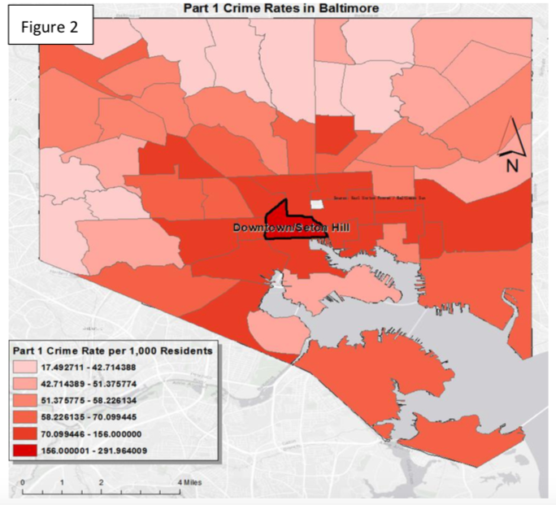

Politics and Policy
BY Ru Xu
Published December 10, 2017
(Skills&Tools: ArcGIS)
Prior to the implementation of public surveillance cameras in 2004, Baltimore experienced 11,183 violent crimes and 48,653 total crimes, resulting in the seventh-highest violent crime rate and 28th overall highest crime rate in the United States. Public surveillance cameras offered the opportunity to use technology that could aid in the prevention, detection, and investigation of these crimes.
In 2005, mayor O’Malley announced the first phase of establishing Baltimore’s CitiWatch program with Department of Homeland Security. Funding with several million dollars, 50 surveillance cameras were installed in downtown and expand year by year. Up to now, there are 603 surveillance cameras covers the city.
Surveillance Camera system are mainly have 2 functions:
The first function is widely accepted and reasonable. For the second function, GIS is a good way to do basic analysis on examine if this program efficient as police officers claimed to be. In addition, with the help of GIS, we can also know if the current distribution of cameras is efficient.
I got data from five sources:
Overview of crime and surveillance cameras in Baltimore
Public surveillance systems include a network of cameras and components for monitoring, recording, and transmitting video images. These systems are typically equipped with night vision, color recording, and have the ability to pan, tilt, and zoom.
Next map is an overview of Baltimore’s crime and surveillance cameras, I use X, Y coordinates to put 602 surveillance cameras on the map and use geocoding technique to put about 2000 crimes happened during Jan 13th - Jan 28th ( there are about 50,000 violent crimes happens in Baltimore a year, if I use data of the whole year, the map will looks messy ) with 98 percent matching on map and symbolize them with various categories of Part 1 crimes.
Baltimore Crime and Surveillance Camera Map
Narrowed Research Area
As there are more than 600 surveillance cameras and 2000 crimes on the map, it’s not easy to analyze on full extent at beginning, in addition, I’m going to buffer cameras and draw circles of its visual distance, it will be hard to recognize because distribution of cameras is uneven. As a result, to begin with, I narrowed the scale to downtown, which is one of the most representative high camera density area with the highest part 1 crime rate (291 in 1000 residents) in Baltimore.
Crime Rates in Baltimore

Types of Crime
What is the Area being surveilled?
According to Baltimore CCTV, the visual distance of surveillance cameras is 256 ft, assume the vision is not obscured, thus I use buffer to create circles that within the vision of cameras. in Baltimore.
All Crimes Happened in this Area
In order to have clearer view of the map, I simplified the various symbols of crimes to same red dots. There are total of 144 crimes happened in Downtown, 43 of them are not surveilled by cameras (out of buffer circles).
Analysis
As I want to know how large the areas that are being watched by cameras, and how many crimes are within them
Briefly in conclusion, in 0.7438 square miles area of downtown/Seton Hill, cameras are surveilling 0.4832 square mile which counts 64 percent, 70.1 percent of crimes fell into camera’s vision. It seems that surveillance cameras do not deter criminals a lot.
The Whole Baltimore City
A single area can be representative, but we still need to see if the conclusion can be draw to the whole city. Let’s take an overview of Baltimore city again, I find that in 27 out of 55 districts of Baltimore where surveillance camera system has been implemented, Cameras’ vision covers 28 percent of the whole area which is 28.02 square mile, and 455 crimes which counts 61 percent of Part 1 crimes happened within are supposed to be recorded. Generally, the distribution of surveillance cameras in Baltimore is efficient in surveilling crimes. However, when considering this in another way, in Baltimore, where surveillance cameras are installed, crime rates are even higher than elsewhere. Which is quite contradictory to what police department has been claimed.
Is it necessary to implement more surveillance cameras?
In 28 Districts where no surveillance camera is installed. According from tables of the content, there are 534 crimes happened in 64.26 square mile area which is peripheral in Baltimore. Compare with 746 crimes happened in 28.02 square mile area where cameras are implemented, this low density may have less priority in considering further implementation. Though crime density is generally low, but the distribution is uneven, as visualized by the map, some areas has even the closed crime rates as in central of the city.
For example
I recommend local government to implement surverillance camera systems.
Conclusion
To summarize, in districts that cameras are implemented, the allocation is generally efficient to surveil crimes as much as possible. In peripheral areas where no camera is installed probably due to the low density of crimes, however, I suggest that some blocks with high crime rates need to be implemented with surveillance cameras. Contrarily, if what Baltimore’s police department said is true, crime rates should be lower in places with cameras, but as we see, it is even higher than other places. Because some limitations, this conclusion may need future research on data collecting to make comparison between before and after the implementation of Citiwatch Program.